Yiko Yiko
UI/UX Design & Project Management
Yiko Yiko is a small San Diego bakery that makes handmade, healthier desserts. It had no website, and every custom cake was ordered by chatting back and forth on WeChat. As freelancers in a web design practicum, our team of four gave it one: playful like the brand, and simple enough to order a cake in a few minutes.
My part
- Client & Project ManagementFound our client by cold-calling local businesses until Yiko Yiko said yes. With my co-PM, I met the owners in person to agree on scope and kept the project on track.
- Cake Order FlowDesigned the custom cake order that replaces WeChat: date, cake type, fillings, flavor, size, writing and a reference photo, then checkout, all in one flow.
- Desktop DesignTook the mobile site to desktop, from mid-fi to hi-fi, using the extra space for hover details, a two-level menu and a single-page order form.
- Course
- COGS 187B
UC San Diego - Team
- 4 designers
- Timeline
- Jan – Mar 2025
- Client
- Yiko Yiko bakery
- Platform
- Responsive web
- Tools
- Figma, Framer
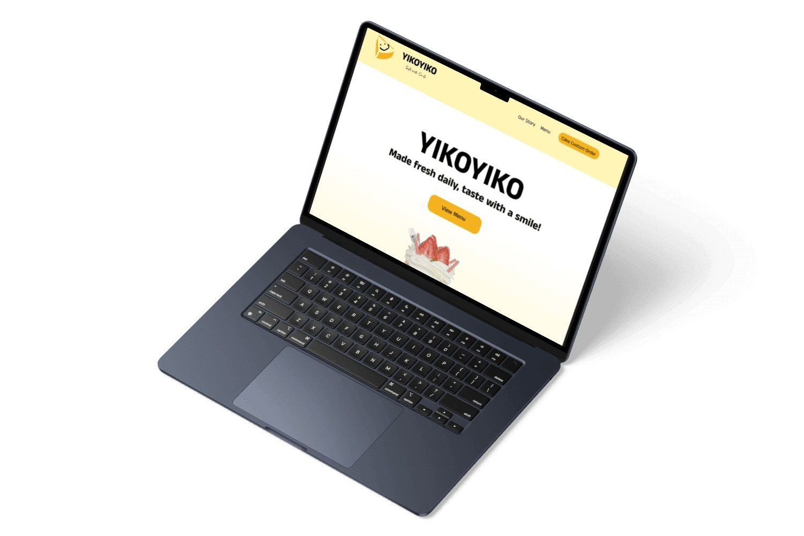
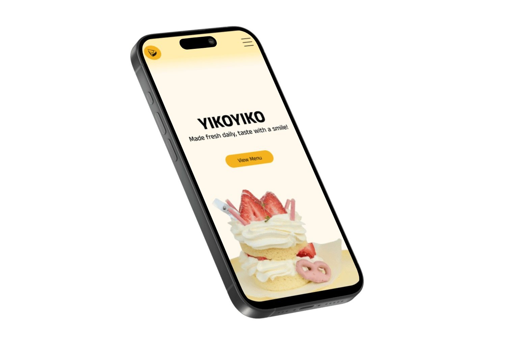
Made fresh daily, taste with a smile
Designed mobile first, then desktop, in Figma.
The client
Finding someone who needed us
The course asked us to work for a real client, so the first problem was finding one. I called local businesses, checked who had no website or an outdated one, and heard a lot of no’s. Yiko Yiko had no website at all, which meant building their whole online presence from scratch.
We met the owners in person to hear what they wanted.
- “Make it fun, cute and interactive”
- A logo animation on entry, hover reveals and hand-drawn menu items.
- “Tell people our desserts are handmade and healthier”
- An Our Story page with short text and big photos.
- “Show seasonal items and every cake type”
- A menu by category, then by cake type.
- “Stop taking cake orders on WeChat”
- A custom cake order form with checkout.
- “Say that we’re open every day”
- Hours in the menu and footer of every page.
The users
Three kinds of visitors
The regular
Mrs. Kim works from home, cares about health and quality, and stops by often.
The occasional
Kimberly is a student who studies at cafés and treats herself to the popular items.
The new
Ryan is an influencer who comes for the look of the shop and shares desserts online.
Mid-fi
Landing
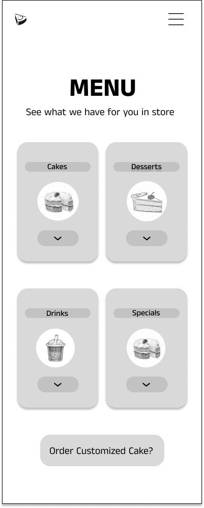
Menu
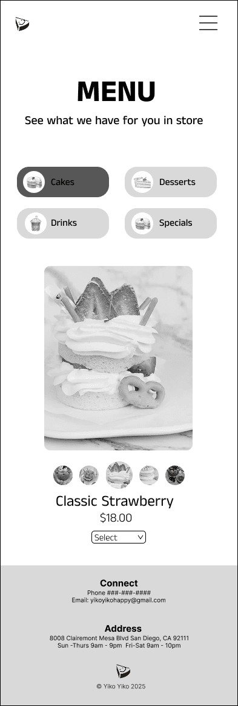
Item
Hi-fi
Landing
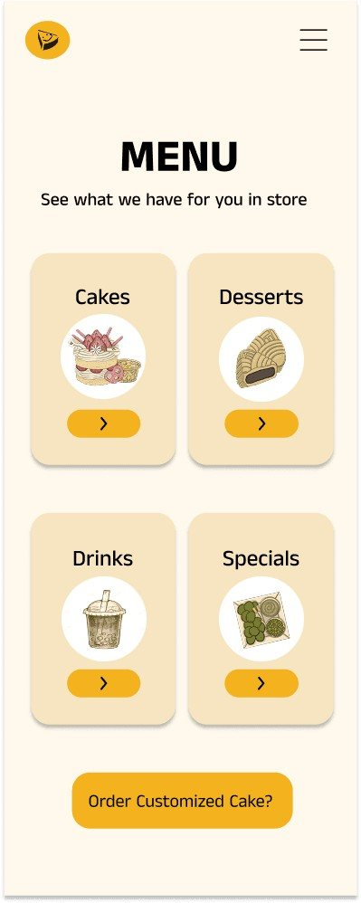
Menu
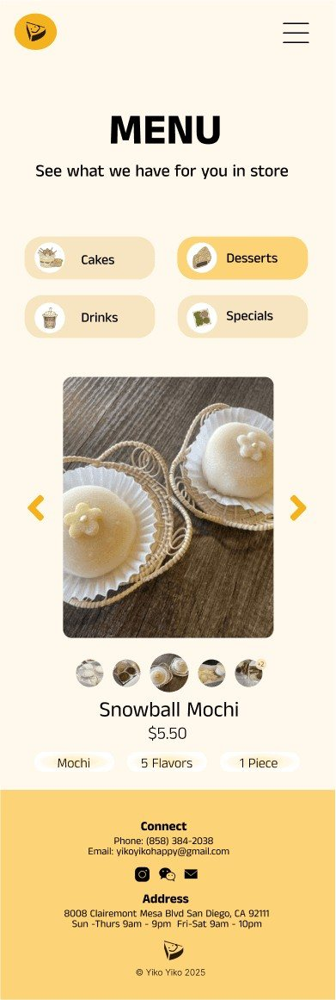
Item
Designed for the regular first
Mobile came first, for customers on the go. User testing on the mid-fi shaped the hi-fi: clearer navigation and labels, real product photos, and hours one tap away.
The cake order
From a WeChat thread to one form
Every custom cake used to mean a long chat: which size, which filling, when to pick it up. I turned those questions into one form, in the order a customer thinks about a cake: when, what kind, how it tastes, how it looks, then pay.
For a fully custom cake, customers can upload a reference photo. The form shows an estimated price and explains that the bakery will follow up, so nobody is surprised.
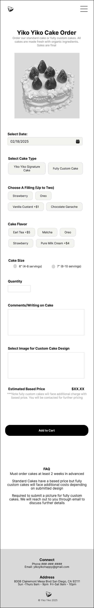
Order · mid-fi
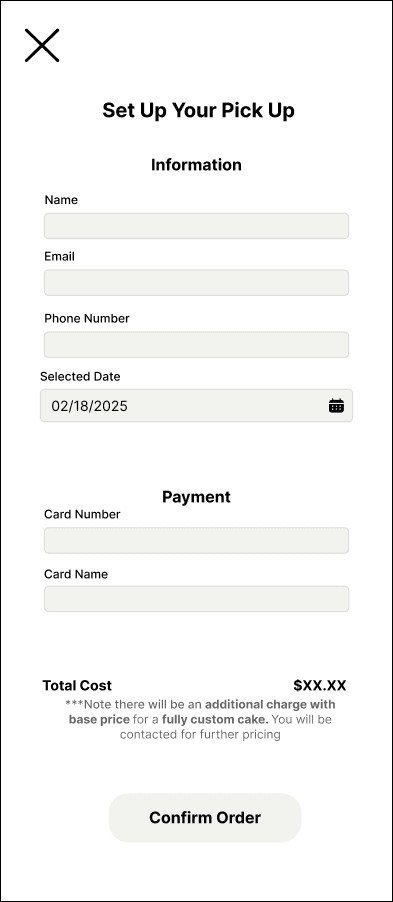
Checkout · mid-fi
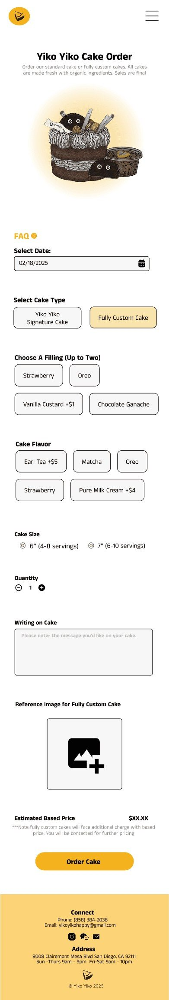
Order · hi-fi
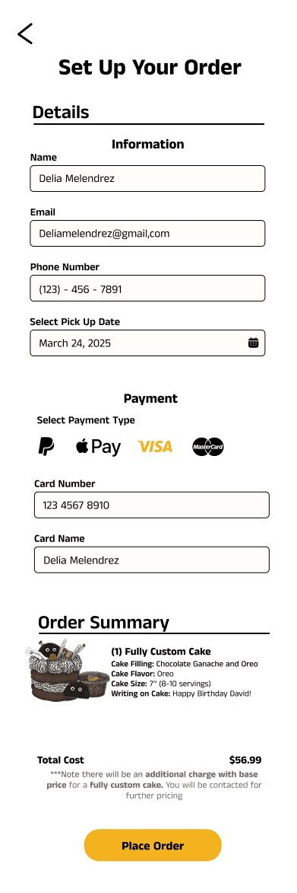
Checkout · hi-fi
Mid-fi to hi-fi
The hi-fi adds clearer labels, the reference photo upload, a writing-on-cake field, Apple Pay and card options, and an order summary before you pay.
Desktop
More room to look around
On a phone people are in a hurry; at a desk they have time to browse. I kept the mobile structure and used the space for detail: hover to reveal seasonal items and brand values, a second menu level for cake types, and the whole cake order on one scrollable page with a FAQ pop-up and a calendar.
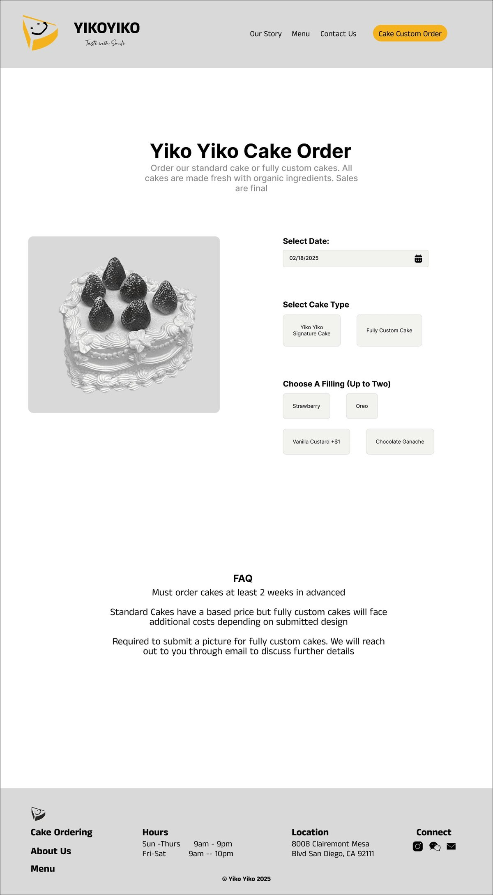
Mid-fi
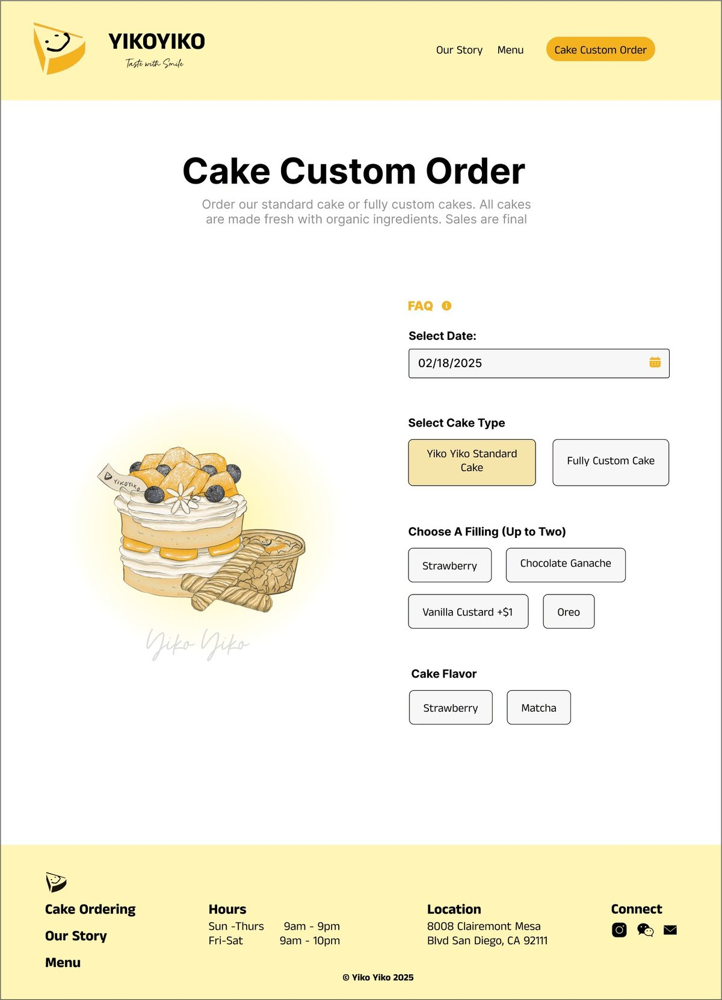
Hi-fi
The order, on one page
Every question sits on a single scroll, next to a picture of the cake.
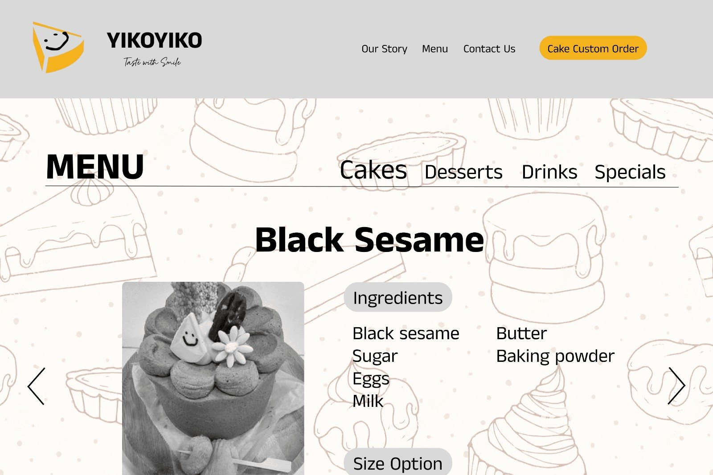
Mid-fi
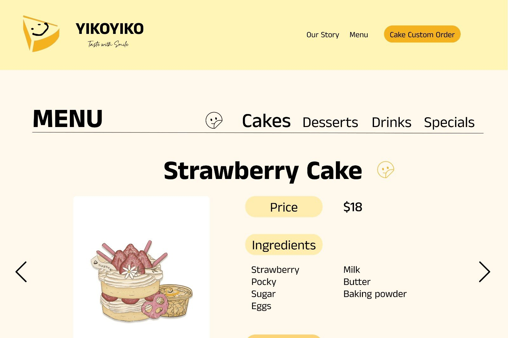
Hi-fi
One dessert at a time
Each item shows its price, ingredients and tags. The picture flips between drawing and photo, and arrows browse the rest of the category.
Menu · cakes
The desktop hi-fi
Every dessert is drawn in the brand’s style, so browsing feels like walking into the shop.
Reflect
What I took away
Clients go quiet. Near the end the owners stopped replying, so we sourced photos and content ourselves. Collect materials early.
Three voices, one design. The client, the course and our testers didn’t always agree. We had to choose, and say why.
Mobile and desktop are different moments. Same bakery, different patience.
Next, we would walk the owners through the design, gather their remaining photos and content, and make every page interactive.